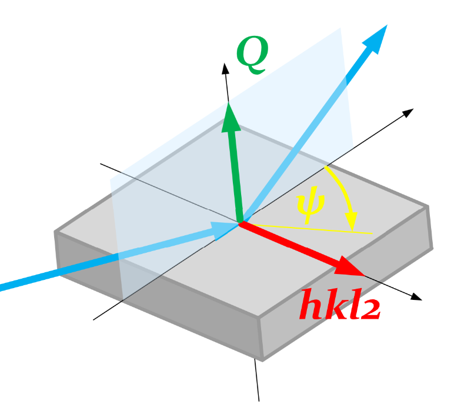

Scan \(\psi\) at fixed \(Q\) and \(hkl_2\)#
This hklpy notebook demonstrates a diffractometer scan of angle \(\psi\), the expected angle between vector \(Q\) and a reference vector \(hkl_2\). In this schematic, the X-ray beam is in blue, \(Q\) is green, \(hkl_2\) is read, \(\psi\) is in black (on the sample’s surface), and the principle axes are also black:

First, setup bluesky and build the diffractometer object.
[1]:
from bluesky import plan_stubs as bps
from bluesky import preprocessors as bpp
from bluesky import RunEngine, plan_stubs as bps
from bluesky.callbacks.best_effort import BestEffortCallback
from hkl import A_KEV
from hkl import new_lattice
from hkl import SimulatedE4CV
from hkl.diffract import Diffractometer
from hkl.util import libhkl
from ophyd import Signal
from ophyd.sim import noisy_det
import databroker
import math
import numpy
bec = BestEffortCallback()
cat = databroker.temp().v2
RE = RunEngine()
RE.subscribe(cat.v1.insert)
RE.subscribe(bec)
bec.disable_plots()
UserUnits = libhkl.UnitEnum.USER
diffractometer = SimulatedE4CV("", name="diffractometer")
Configure the real-space axes so they are reported in LiveTable. Also, the orientation reflections should be reported with other configuration information, not as primary data.
[ ]:
for item in diffractometer.real_positioners:
item.kind = "hinted"
diffractometer.reflections.kind = "config"
Add a sample of vibranium. The cubic lattice constant is exactly \(2\pi\).
[2]:
diffractometer.calc.new_sample("vibranium", lattice=new_lattice(2 * math.pi))
[2]:
HklSample(name='vibranium', lattice=LatticeTuple(a=6.283185307179586, b=6.283185307179586, c=6.283185307179586, alpha=90.0, beta=90.0, gamma=90.0), ux=Parameter(name='None (internally: ux)', limits=(min=-180.0, max=180.0), value=0.0, fit=True, inverted=False, units='Degree'), uy=Parameter(name='None (internally: uy)', limits=(min=-180.0, max=180.0), value=0.0, fit=True, inverted=False, units='Degree'), uz=Parameter(name='None (internally: uz)', limits=(min=-180.0, max=180.0), value=0.0, fit=True, inverted=False, units='Degree'), U=array([[1., 0., 0.],
[0., 1., 0.],
[0., 0., 1.]]), UB=array([[ 1.000000e+00, -6.123234e-17, -6.123234e-17],
[ 0.000000e+00, 1.000000e+00, -6.123234e-17],
[ 0.000000e+00, 0.000000e+00, 1.000000e+00]]), reflections=[])
Set the diffractometer’s wavelength by setting the X-ray photon energy. Orient the sample with two observed reflections and compute the \(UB\) orientation matrix.
[3]:
diffractometer.energy.put(A_KEV / 1.54) # (8.0509 keV)
om = 29.35355
tth = 2 * om
r1 = diffractometer.calc.sample.add_reflection(
4,
0,
0,
position=diffractometer.calc.Position(tth=tth, omega=om, chi=0, phi=0),
)
r2 = diffractometer.calc.sample.add_reflection(
0,
4,
0,
position=diffractometer.calc.Position(tth=tth, omega=om, chi=90, phi=0),
)
diffractometer.calc.sample.compute_UB(r1, r2)
[3]:
array([[-5.55111433e-17, -1.11022287e-16, -1.00000000e+00],
[ 0.00000000e+00, 1.00000000e+00, -1.72254627e-16],
[ 1.00000000e+00, -6.12323400e-17, -1.16743483e-16]])
bluesky plan_stub to move \(\psi\)#
Create a bluesky plan stub to move \(\psi\) given \(hkl_2\) and \(Q\).
This plan stub has been generalized to set all the extra parameters. It makes no assumption about any specific diffractometer geometry. The default mode can be changed with a keyword argument. When using keyword test=True, the number of digits reported can be changed with a keyword argument.
It is helpful to have a separate plan stub (a plan that does not generate any data streams) to perform the steps needed to change the \(\psi\) value. For the forward computation (hkl to angles), the procedure is:
select the diffractometer mode
set the extra parameters (\(hkl_2\) and \(\psi\))
compute angles from
forward(Q)move diffractometer to the computed angles
NOTE: The \(\psi\) rotation angle is an extra diffractometer parameter, only available as defined by certain diffractometer modes. It is not defined as an ophyd Signal object. It cannot be scanned directly with any of the standard bluesky plans, nor can it be moved with bps.mv(). A custom plan is needed to scan \(\psi\).
[4]:
def move_psi_forward(
dfrct: Diffractometer,
Q: dict, # (h, k, l)
extras: dict, # (h2, k2, l2, psi)
mode: str = "psi_constant",
test: bool = False,
digits: int = 5,
):
"""
Set extras and compute forward solution given 'Q' & reference reflection 'hkl_2'.
EXAMPLE::
RE(
move_psi_forward(
diffractometer,
Q=dict(h=2, k=1, l=0),
extras=dict(h2=2, k2=2, l2=0, psi=25),
)
)
"""
dfrct.engine.mode = mode
extras = [extras[k] for k in dfrct.calc.parameters]
dfrct.calc.engine._engine.parameters_values_set(extras, UserUnits)
# TODO: When test=True, can any moves be avoided?
solution = dfrct.forward(list(Q.values()))
reals = [] # convert to ophyd real positioner objects
for k, v in solution._asdict().items():
reals.append(getattr(dfrct, k))
reals.append(v)
if test:
def pos_dict(pos_tuple):
# fmt: off
return {
k: round(v, digits) or 0
for k, v in pos_tuple._asdict().items()
}
# fmt: on
result = pos_dict(dfrct.position)
result.update(pos_dict(dfrct.real_position))
result.update(
dict(
zip(
dfrct.calc.parameters,
dfrct.calc.engine._engine.parameters_values_get(UserUnits),
)
)
)
print(result)
else:
yield from bps.mv(*reals)
bluesky plan to scan extra parameters such as \(\psi\)#
Create a generalized bluesky plan that can scan \(\psi\) given \(Q\) & \(hkl_2\). The values of \(hkl_2\) are described as constants in the extras input dictionary. The axis parameter is psi in this example. The pseudos parameter contains the values of \(Q\).
Do not provide a reals keyword. That’s a future feature. It must remain at the default value of None for this example.
[5]:
def scan_extra_parameter(
dfrct: Diffractometer = None,
detectors: list = [],
axis: str = None, # name of extra parameter to be scanned
start: float = None,
finish: float = None,
num: int = None,
pseudos: dict = None, # h, k, l
reals: dict = None, # angles
extras: dict = {}, # define all but the 'axis', these will remain constant
md: dict = None,
):
"""
Scan one (or more) extra diffractometer parameter(s), such as psi.
- iterate extras as decribed:
- set extras
- solution = forward(pseudos)
- move to solution
- trigger detectors
- read all controls
"""
# if pseudos is None and reals is None:
# raise SolverError("Must define either pseudos or reals.")
# if pseudos is not None and reals is not None:
# raise SolverError("Cannot define both pseudos and reals.")
forwardTransformation = reals is None
_md = {
"diffractometer": {
"name": dfrct.name,
"geometry": dfrct.calc.geometry_name,
"engine": dfrct.engine.name,
"mode": dfrct.engine.mode,
"extra_axes": dfrct.calc.parameters,
},
"axis": axis,
"start": start,
"finish": finish,
"num": num,
"pseudos": pseudos,
"reals": reals,
"extras": extras,
"transformation": "forward" if forwardTransformation else "inverse",
}
_md.update(md or {})
# Make a Signal for psi so it can be reported in LiveTable and any stored data.
signal = Signal(name=axis, value=start)
all_controls = detectors
all_controls.append(dfrct)
all_controls.append(signal)
# TODO: controls.append(extras_device) # TODO: need Device to report ALL extras
all_controls = list(set(all_controls))
@bpp.stage_decorator(detectors)
@bpp.run_decorator(md=_md)
def _inner():
for value in numpy.linspace(start, finish, num=num):
# note the new position for reporting later
yield from bps.mv(signal, value)
# move
extras.update({axis: value})
if forwardTransformation:
yield from move_psi_forward(dfrct, Q=pseudos, extras=extras)
else:
pass # TODO: inverse
# trigger
group = "scan_extra_parameter_detectors"
for item in detectors:
yield from bps.trigger(item, group=group)
yield from bps.wait(group=group)
# read & record the data point
yield from bps.create("primary")
for item in all_controls:
yield from bps.read(item)
yield from bps.save()
return (yield from _inner())
Scan \(\psi\) over a wide range in coarse steps. This example chooses \(Q=(210)\) and \(hkl_2=(220)\). Save the uid from the scan for later reference.
[7]:
uid, = RE(
scan_extra_parameter(
diffractometer,
detectors=[noisy_det,],
pseudos=dict(h=2, k=1, l=0),
axis="psi",
start=0,
finish=175,
num=19,
extras=dict(h2=2, k2=2, l2=0),
),
)
Transient Scan ID: 1 Time: 2024-09-04 00:29:51
Persistent Unique Scan ID: '1c749cd0-a59f-4611-9b54-b030b29f6407'
New stream: 'primary'
+-----------+------------+------------+------------+------------------+------------------+------------------+----------------------+--------------------+--------------------+--------------------+
| seq_num | time | noisy_det | psi | diffractometer_h | diffractometer_k | diffractometer_l | diffractometer_omega | diffractometer_chi | diffractometer_phi | diffractometer_tth |
+-----------+------------+------------+------------+------------------+------------------+------------------+----------------------+--------------------+--------------------+--------------------+
| 1 | 00:29:51.4 | 0.933 | 0.000 | 2.000 | 1.000 | -0.000 | 47.531 | -90.000 | 90.000 | -31.808 |
| 2 | 00:29:51.4 | 0.999 | 9.722 | 2.000 | 1.000 | -0.000 | 47.198 | -98.687 | 85.618 | -31.808 |
| 3 | 00:29:51.4 | 0.938 | 19.444 | 2.000 | 1.000 | -0.000 | 46.161 | -107.322 | 81.028 | -31.808 |
| 4 | 00:29:51.4 | 1.040 | 29.167 | 2.000 | 1.000 | -0.000 | 44.300 | -115.843 | 75.985 | -31.808 |
| 5 | 00:29:51.4 | 0.918 | 38.889 | 2.000 | 1.000 | -0.000 | 41.380 | -124.162 | 70.165 | -31.808 |
| 6 | 00:29:51.5 | 1.001 | 48.611 | 2.000 | 1.000 | -0.000 | 36.998 | -132.147 | 63.094 | -31.808 |
| 7 | 00:29:51.5 | 1.011 | 58.333 | 2.000 | 1.000 | -0.000 | 30.492 | -139.576 | 54.056 | -31.808 |
| 8 | 00:29:51.6 | 0.935 | 68.056 | 2.000 | 1.000 | 0.000 | 20.871 | -146.060 | 42.016 | -31.808 |
| 9 | 00:29:51.6 | 0.901 | 77.778 | 2.000 | 1.000 | -0.000 | 7.044 | -150.945 | 25.844 | -31.808 |
| 10 | 00:29:51.7 | 1.067 | 87.500 | 2.000 | 1.000 | 0.000 | -10.918 | -153.326 | 5.576 | -31.808 |
| 11 | 00:29:51.7 | 1.088 | 97.222 | 2.000 | 1.000 | 0.000 | -30.018 | -152.540 | -15.821 | -31.808 |
| 12 | 00:29:51.7 | 0.906 | 106.944 | 2.000 | 1.000 | -0.000 | -46.142 | -148.826 | -34.265 | -31.808 |
| 13 | 00:29:51.7 | 1.026 | 116.667 | 2.000 | 1.000 | 0.000 | -57.815 | -143.062 | -48.316 | -31.808 |
| 14 | 00:29:51.7 | 0.974 | 126.389 | 2.000 | 1.000 | 0.000 | -65.780 | -136.056 | -58.749 | -31.808 |
| 15 | 00:29:51.7 | 1.093 | 136.111 | 2.000 | 1.000 | -0.000 | -71.152 | -128.321 | -66.723 | -31.808 |
| 16 | 00:29:51.7 | 0.996 | 145.833 | 2.000 | 1.000 | 0.000 | -74.760 | -120.153 | -73.115 | -31.808 |
| 17 | 00:29:51.7 | 1.007 | 155.556 | 2.000 | 1.000 | 0.000 | -77.127 | -111.723 | -78.509 | -31.808 |
| 18 | 00:29:51.7 | 1.045 | 165.278 | 2.000 | 1.000 | 0.000 | -78.566 | -103.138 | -83.298 | -31.808 |
| 19 | 00:29:51.7 | 1.035 | 175.000 | 2.000 | 1.000 | 0.000 | -79.252 | -94.471 | -87.759 | -31.808 |
+-----------+------------+------------+------------+------------------+------------------+------------------+----------------------+--------------------+--------------------+--------------------+
generator scan_extra_parameter ['1c749cd0'] (scan num: 1)
Get the run data from the catalog using the uid as an index. View the metadata from that run.
[8]:
run = cat[uid]
run.metadata["start"]
[8]:
Start({'axis': 'psi',
'diffractometer': {'engine': 'hkl',
'extra_axes': [],
'geometry': 'E4CV',
'mode': 'bissector',
'name': 'diffractometer'},
'extras': {'h2': 2, 'k2': 2, 'l2': 0},
'finish': 175,
'num': 19,
'plan_name': 'scan_extra_parameter',
'plan_type': 'generator',
'pseudos': {'h': 2, 'k': 1, 'l': 0},
'reals': None,
'scan_id': 1,
'start': 0,
'time': 1725427791.3530302,
'transformation': 'forward',
'uid': '1c749cd0-a59f-4611-9b54-b030b29f6407',
'versions': {'bluesky': '1.13.0a3', 'ophyd': '1.9.0'}})
Create plots of each diffractometer real axis v. \(\psi\) to show how the axes moved during the scan. Use the axis names as recorded in the databroker catalog.
Note: Detector axes (such as tth) remain constant as shown in the LiveTable. The plots show variations in the 8th decimal place due to machine precision.
[9]:
from apstools.utils import plotxy
title = "$Q=(210)$ and $hkl_2=(220)$"
for item in diffractometer.real_positioners:
plotxy(run, "psi", item.name, stats=False, title=title)
/home/beams/JEMIAN/.conda/envs/bluesky_2024_2/lib/python3.11/site-packages/databroker/intake_xarray_core/base.py:23: FutureWarning: The return type of `Dataset.dims` will be changed to return a set of dimension names in future, in order to be more consistent with `DataArray.dims`. To access a mapping from dimension names to lengths, please use `Dataset.sizes`.
'dims': dict(self._ds.dims),